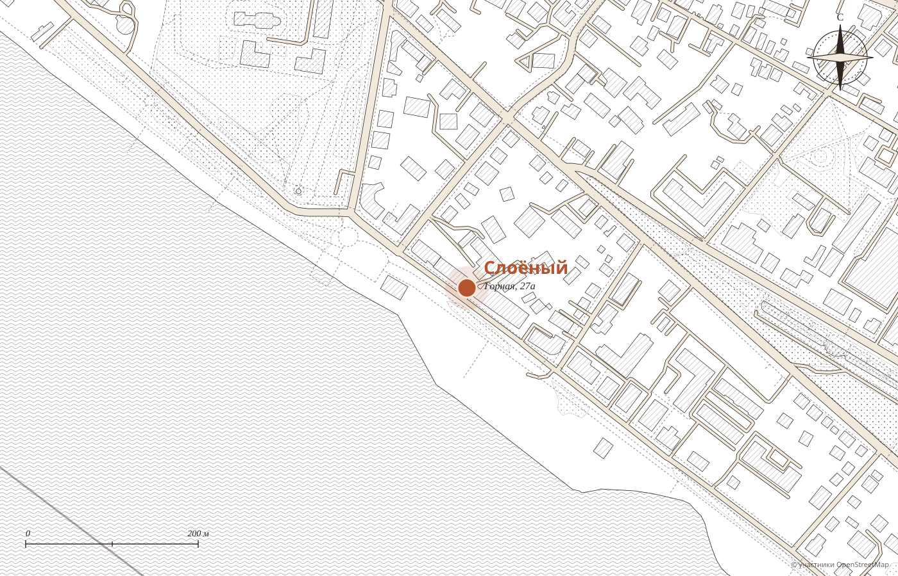

№ 1
Наполеон
«Самый вкусный, с особенным кремом»
Надежда, 2ГИС
···· ₽
Демо-макет студии MERIDIAN · не является официальным сайтом заведения
Кофейня-кондитерская
Наполеон с особенным кремом, макарон, картошка и круассаны, которые гости называют лучшими в городе. Кофе в красивой посуде, живые цветы по всей кофейне и вид на Волгу с террасы.
пн‑пт 9:00 до 21:00
сб и вс 10:00 до 22:00

Слой первый
Гостья пишет: «Чокнуться можно, какие вкусные десерты. И всегда новые интересные варианты делают, новые вкусы». Ниже шесть позиций, которые чаще всего хвалят в отзывах.
№ 1
«Самый вкусный, с особенным кремом»
Надежда, 2ГИС
···· ₽

№ 2
«Лучшие макарунсы в городе!»
Марина, 2ГИС
···· ₽

№ 3
«Выбор пал на картошку, и я не пожалела»
Алина, 2ГИС
···· ₽

№ 4
«Самые вкусные круассаны подают именно тут»
Ирина, 2ГИС
···· ₽

№ 5
«Пирог вишнёвый был очень вкусный»
Валерия, 2ГИС
···· ₽

№ 6
«Изумительный кофе в очень красивой посуде»
Надежда, 2ГИС
···· ₽

Слой второй
Надежда работает в общепите и много ходит по кофейням: «Так вот, эта лучшая, где мне довелось побывать. Мы попробовали около десяти десертов за два дня, восторг!»
Слой третий


«Порция красной рыбы в завтраке немыслимая, за такую доступную цену», пишет гостья. Завтраки с 9:00 до 13:00, цены подставляются из вашего меню.
Слой четвёртый


С любовью из Костромы
Гости отмечают открытки и возможность перевести деньги в приют прямо в кофейне. «Красивый вид на Волгу», «вид с террасы очень красивый», пишут те, кто приезжал летом.


Зал
«Отдельный лайк за живые цветы по всей кофейне, очень атмосферно», пишет гостья. Терракотовые и синие стены, зеркала, диванчики и «низкий столик с пуфиком, мой любимый».
Что любят гости
Из отзывов гостей в 2ГИС. Наведите на слово или нажмите на него: покажем, как это выглядит.
Маленькие ритуалы

01
Детские книги«Которые нигде не встречали больше», пишет мама. Для сына это главный повод зайти.
02
Торты на заказИ фототорты, и шоколад ручной работы, и ПП-десерты.
03
Мастер-классыДля детей по выходным, пишут гости.
04
Можно с собакой«С шерстяным можно», и с ноутбуком тоже.

Адрес и часы
Первый этаж, в центре Костромы, с видом на Волгу.
Для владельца
Гость видит витрину и сразу пишет кондитеру или звонит.
Наполеон, макарон и картошку видно ещё до прихода.
Лучшая кофейня 2023, 2025 и 2026 на первом экране, а не в ленте ВКонтакте.
Никаких персональных данных: политика конфиденциальности не нужна.